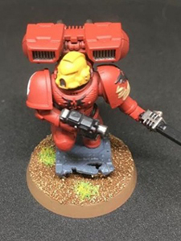
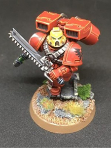

我们是谁？
中国战锤公开赛是一个在中国境内运行高质量战锤活动的组织。
成立于2019年，在华北战锤公开赛首次亮相。
我们的目标是将所有文化的玩家聚集在一起分享兴趣爱好。克服语言障碍并有组织性的提供沉浸式的，有序的，极佳的活动以展示兴趣爱好。
关于制作模型的全部细节，涂装和为你的ITC模型上底盘，以及‘视作指代’和改造的说明，请见下文。
除了这些基本的原则，我们对军队的外观并不严格。
只要你努力带来一支完全涂装的军队，这就够了。
提示：如果你带来的模型某些十分特别，我们建议提前联系我们并取得许可，以免在赛事当天引发争议。
如果你计划使用原装模型，并按照规则组装并为它们附上底座，你也许可以跳过这个部分。否则，我们建议你阅读以免违反任何规则。
首先，所有模型必须所见所得。这意味着我们不允许任何指代。
有些人可能这样阻止了创造性以及限制了这个兴趣重要的一部分。相反， 我们乐意见到一支军队有着精美改造并完全涂装的模型，但是我们也不希望看见关于模型选择不清晰的争议。
记住这些，让我们看看你能带些什么。
中国战锤公开赛要求玩家军队中的所有模型至少三色完全涂装。
最低涂装标准对每一人都是不一样，以及每个人的理解不同，在此说明：
 |
 |  |
| 模型明显未涂装的，或只有一种底色。 这个标准不会被活动所接受 |
模型涂成可接受的桌涂，有着3种平色和基本的地形材质。 这种标准是可接受的。 |
模型完全涂装，有着阴影，高光以及所有的细节。 这种标准是活动所希望的。 |
此外，你的涂装搭配必须准确的反应模型的结构。
来自不同势力或者不同分队收益的单位，例如使用不同战团战术的星际战士，必须有着视觉上的区分。
作为例子，如果你的军队包含三个不同分队的星际战士，本别是暗鸦守卫，火蜥蜴以及极限战士战团， 他们必须通过涂装配色、装饰或者是轻易可视的表演立刻视觉区分开来。他们不应由你个人的背景设定而变得外观相近。
除了上文的涂装和模型要求，华南战锤公开赛要求玩家的所有模型都适当的涂装底盘。
这意味这整个底座上至少由一种颜色和一些材质。我们相信这种全军的基本要求可以在短时间内视线， 因此没有理由展现一支未涂装底盘的军队。此外，这不是一个严厉的要求，因此享受这过程。
例外是那些没有底座或者是那些包含了透明飞行底盘的模型。此外如果你希望全军使用透明亚克力底座或是那些非标准方式，只要他们是正确的尺寸和形状就可以。
目前在售的模型的可接受底座尺寸在 Dakka Dakka. 上由汇编。注意，这不是一个决定性的指导，一些老模型所携底座可能有些例外，例如：25mm底座的星际战士仍是可接受的，但用小号底盘的90年代的终结者仍待讨论。